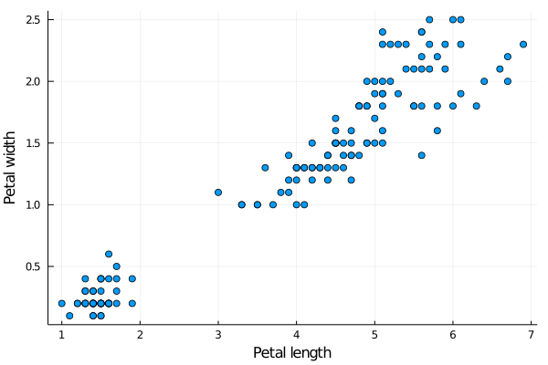
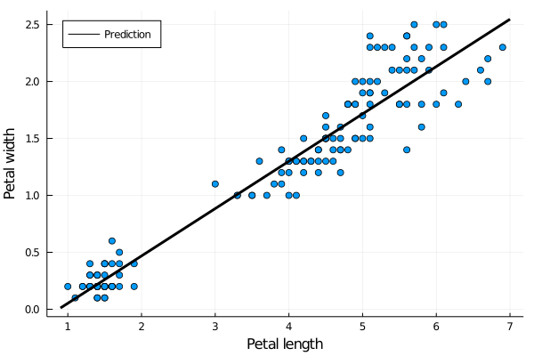

Linear regression
Training a machine learning model requires data. Neural networks require lots of data. Since collecting data is difficult, there are many datasets at the UCI Machine Learning Repository. We will use the iris (kosatec in Czech) dataset which predicts one of the three types of iris based on sepal (kališní lístek in Czech) and petal (okvětní lístek in Czech) widths and lengths.

If you do not see any differences between these three species, machine learning to the rescue!
Loading and preparing data
To experiment with machine learning models, we use the RDatasets package which stores many machine learning datasets, and load the data by
using StatsPlots
using RDatasets
iris = dataset("datasets", "iris")| SepalLength | SepalWidth | PetalLength | PetalWidth | Species | |
|---|---|---|---|---|---|
| Float64 | Float64 | Float64 | Float64 | Cat… | |
| 1 | 5.1 | 3.5 | 1.4 | 0.2 | setosa |
| 2 | 4.9 | 3.0 | 1.4 | 0.2 | setosa |
| 3 | 4.7 | 3.2 | 1.3 | 0.2 | setosa |
| 4 | 4.6 | 3.1 | 1.5 | 0.2 | setosa |
| 5 | 5.0 | 3.6 | 1.4 | 0.2 | setosa |
Printing the first five entries of the data shows that the data are saved in DataFrame and the columns (features) are sepal length, sepal width, petal length and petal width.
When designing a classification method, a good practice is to perform at least a basic analysis of the data. That may include checking for NaNs, infinite values, obvious errors, standard deviations of features or others. Here, we only plot the data.
We will simplify the goal and estimate the dependence of petal width on petal length. Create the data $X$ (do not forget to add the bias) and the labels $y$.
Make a graph of the dependence of petal width on petal length.
Solution:
Since the petal length and width are the third and fourth columns, we assign them to X and y, respectively. We can use iris[:, 4] instead of y = iris[:, :PetalWidth] but the latter is more bulletproof. We need to concatenate X it with a vector of ones to add the bias.
y = iris[:, :PetalWidth]
X = hcat(iris[:, :PetalLength], ones(length(y)))The best plot, in this case, is the s catter plot.
using Plots
scatter(X[:,1], y, label="", xlabel="Petal length", ylabel="Petal width")
The figure shows a positive correlation between length and width. This is natural as bigger petals mean both longer and wider petals. We will quantify this dependence by the linear regression.
Training the classifier
Use the closed-form formula to get the coefficients $w$ for the linear regression. Then use the optim method derived in the previous lecture to solve the optimization problem via gradient descent. The results should be identical.
Solution:
The closed-form expression is $(X^\top X)^{-1}X^\top y$. This can be coded as (X'*X) \ (X'*y).
w = (X'*X) \ (X'*y)For using the gradient descent, we first realize that the formula for the derivate is $X^\top (Xw-y)$. Defining the derivative function in g, we call the optim method in the same way as in the last lecture. Since we use the sum and not mean in the objective, we need to use much smaller stepsize this time.
g(w) = X'*(X*w-y)
w2 = optim([], g, zeros(size(X,2)), GD(1e-4); max_iter=10000)The difference between the solutions is
using LinearAlgebra
norm(w-w2)2.8849444094365703e-12
which is acceptable.
The correct solution is
2-element Array{Float64,1}:
0.4157554163524131
-0.3630755213190365This gives a piece of advice on how to predict the petal width if only petal length is known.
Write the dependence on the petal width on the petal length. Plot it in the previous graph.
Solution:
The desired dependence is
\[\text{width} \approx -0.36 + 0.42*\text{length}.\]
Before plotting the prediction, we save it into f_pred
f_pred(x, w) = w[1]*x + w[2]Then we create the limits x_lim and finally plot a function which connects the two points. We show another possibility of plotting the graph instead of the scatter graph above. This possibility is better in the way that it based on the original iris variable and not the processed X. It can point to potential errors in processing X. We move the legend to the top-left corner.
x_lims = extrema(X[:,1]) .+ [-0.1, 0.1]
@df iris scatter(
:PetalLength,
:PetalWidth;
xlabel = "Petal length",
ylabel = "Petal width",
label = "",
legend = :topleft,
)
plot!(x_lims, x -> f_pred(x,w); label = "Prediction", line = (:black,3))